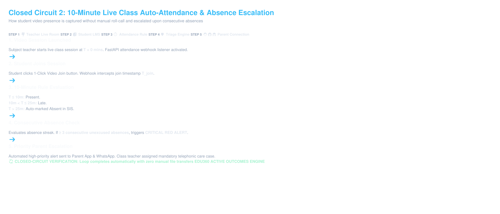
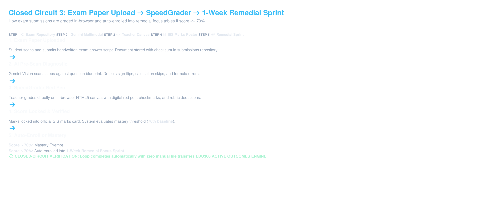
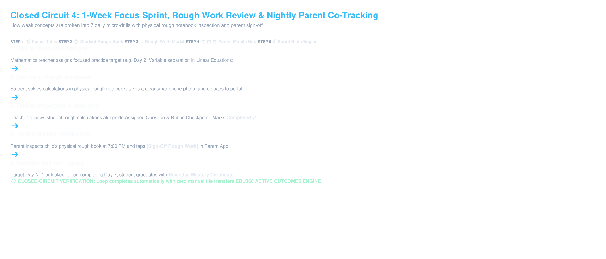
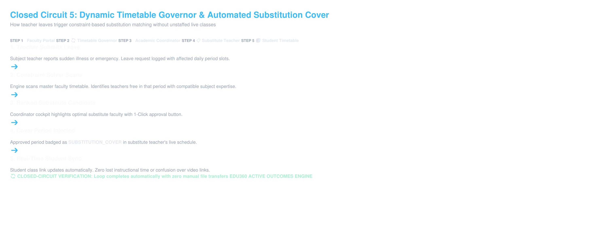
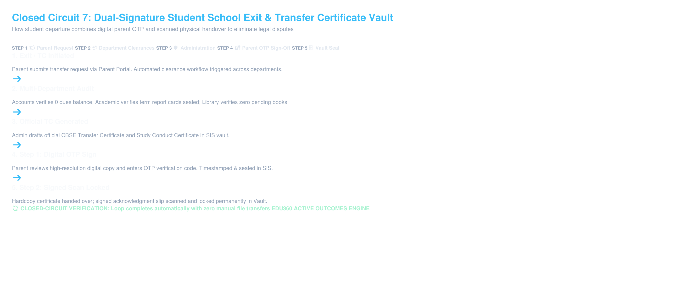

EDU360: Virtual K–12 Academy Outcomes & Intelligence
A production-grade Active Intelligence & Outcomes Engine built for 100% Pure Online Virtual Schooling.
Traditional ERPs are passive digital filing cabinets. They archive marks memos and log late attendance retrospectively without diagnosing why a child failed.
Laser-focused on virtual schooling: Admin, Academic Coord, Exam Coord, Accounts Coord, Admissions Coord, Teacher, Student, and Parent. (Zero bus fleet overhead).
1-Week Remedial Focus Sprint auto-enrolls students ≤ 70% in Mathematics with nightly parent rough-book co-tracking sign-offs.
The 3 Non-Negotiable Core Philosophies
Dynamic Red/Orange/Green Triage Engine runs every 60s, evaluating 3+ consecutive unexcused absences, ≥15% score drops, and 30+ day fee arrears.
Anti-spam moving notice slider eliminates WhatsApp blast fatigue. 10-Minute nightly rough-book verification lets parents sign off on daily practice targets.
10-Minute online class auto-attendance rule saves 15 minutes of live class time. In-browser SpeedGrader with digital red pen eliminates PDF downloads.
Admissions Intake ➔ Atomic SIS & Fee Conversion
10-Minute Live Class Auto-Attendance & Escalation

Exam Moderation, SpeedGrader & 1-Week Remedial Sprint

1-Week Focus Sprint & Nightly Parent Co-Tracking

Dynamic Timetable Governor & Substitution Allocator

Human-in-the-Loop Faculty Workload Relief Engine
Dual-Signature Student Exit & Legal Vault Lock

Technical Transparency: Real Code vs Gemini AI vs Fallbacks
• 60s Priority Triage Multi-Vector Evaluator
• 10-Minute Attendance Webhook Engine
• 15-Minute Homework Backlog Sweeper (#EVD-BKLOG)
• Timetable Substitution Constraint Solver
• 7-Day Remedial Micro-Syllabus Generator
• Rough Work Notebook Vision Error Detector
• Exam Paper Blueprint Pre-Scanner
• Student Socratic Doubt Tutor (No direct answers)
• Instant heuristic pedagogical fallback templates
• Activates in < 1ms if Gemini API is unreachable
• Universal offline & local demo reliability guarantee
Live Product Demo Runbook (Password123)
1. Super Admin (/admin): Login as admin / Password123 → Show top Red Triage card (Rahul Sharma 3 absences) + 1-Click CBSE Audit Export.
2. Teacher Portal (/teacher): Login as teacher_mat / Password123 → Filter Class 8-B. Show students ≤ 70% in Focus Table. Click Day 2 rough work modal.
3. SpeedGrader Canvas: Open worksheet. Pick Red Pen, draw tick, apply -2 rubric tag, click [Finalize Grade]. Zero file downloading.
4. Parent Portal (/parent): Login as parent / Password123 → Show moving slider, 10-Min Co-Tracking card. Tap [Sign-Off Rough Book].
5. Junior K-5 Portal (/junior): Login as junior / Password123 → Show gamified quest timetable and formula chests.